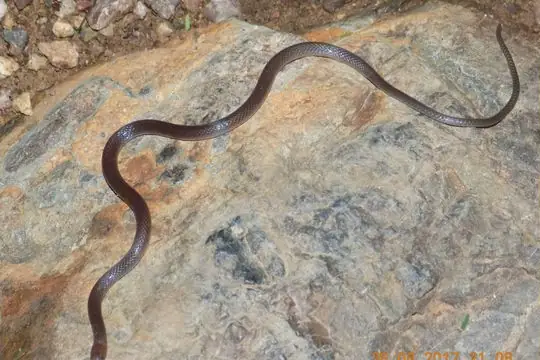

Enulius
The genus Enulius (family Colubridae) has 4 living species in SnakeList (none venomous), recorded in 10 countries.
- 4living species
- 4non-venomous
- 10countries
About the genus
A genus of the family Colubridae (colubrids).
Species
Showing 4 species
 Guanaja Longtail SnakeEnulius bifoveatus
Guanaja Longtail SnakeEnulius bifoveatus
Mexican Longtail SnakeEnulius oligostichus Pacific Longtail SnakeEnulius flavitorques
Pacific Longtail SnakeEnulius flavitorques Roatan Long-tailed SnakeEnulius roatanensis
Roatan Long-tailed SnakeEnulius roatanensis
No snakes in Enulius match.
About the genus Enulius
- Distribution: living species recorded in 10 countries, on 2 continents: North America, South America.
- Family: Colubridae.
- Countries and territories: Belize, Colombia, Costa Rica, El Salvador, Guatemala, Honduras, Mexico, Nicaragua, Panama, Venezuela.
Compare its species
Its living species side by side. Lengths come only from SnakeList’s reviewed, sourced accounts; the others are left blank rather than guessed.
| Species | Venom | Recorded in | Adult length (reviewed accounts) |
|---|---|---|---|
| Guanaja Longtail Snake Enulius bifoveatus | Non-venomous | 1 country (North America) | No reviewed account yet |
| Mexican Longtail Snake Enulius oligostichus | Non-venomous | 1 country (North America) | No reviewed account yet |
| Pacific Longtail Snake Enulius flavitorques | Non-venomous | 10 countries (North America, South America) | No reviewed account yet |
| Roatan Long-tailed Snake Enulius roatanensis | Non-venomous | 1 country (North America) | No reviewed account yet |